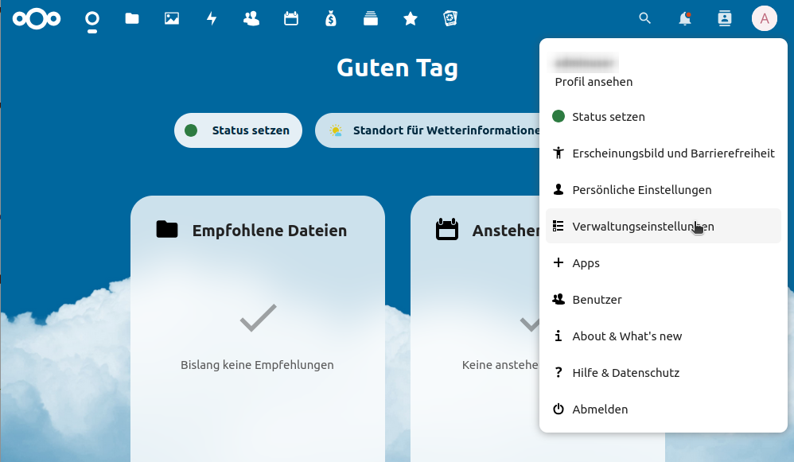

Beta
Diese Lektion befindet sich in der Beta-Phase, was bedeutet, dass sie bereit für den Unterricht durch Dozenten außerhalb des ursprünglichen Autorenteams ist.
Bild 1 von 1: ‘Screenshot auf welchem das Programm Raspberry Pi Imager mit Funktionen zur Auswahl eines Betriebssystems zu sehen ist.’
Raspberry Pi Imager: Tool zur Installation des
Raspberry Pi OS
Abbildung 2
Bild 1 von 1: ‘Drei Screenshot von Kommandozeilen. Der erste zeigt einen Befehl zum herstellen einer SSH-Verbindung, der zweite den rsync-Befehl zum erstellen von Backups und der dritte den Befehl zur erlauben von SSH-Verbindungen in der Firewall.’
Wir werden die meiste Zeit mit der Kommandozeile
arbeiten (hier am Beispiel von SSH (Fernzugriff), Rsync
(Dateisynchronisation) und ufw (Firewall)
Abbildung 3
Bild 1 von 1: ‘Screenshot, der dieAdministrationsoberfläche eines Fritzbox-Routers zeigt. Konkret sind Funktionen zum einrichten von Portweiterleitungen zu sehen.’
Administrationsoberfläche eines
FritzBox-Routers. Zu sehen sind Optionen zum erstellen von
Portfreigaben
Abbildung 4
Bild 1 von 1: ‘Zu sehen sind zwei Screenshots. Links ein Screenshot einer Konfigrationsdatei einer Website für den Apache2-Webserver und rechts die Browser-Administrationsoberschläche des Cloudservers Nextcloud.’
Konfigrationsdatei einer Website mit dem
Apache2-Webserver (links) und die Administrationsoberschläche des
Cloudservers Nextcloud (rechts)
Abbildung 5
Bild 1 von 1: ‘Zu sehen sind vier Bilder. Von links nach rechts: Logo des Radicale-Projekts in Form eines Radieschens, Logo de Pi-hole-Projekts in Form einer abstrahierten Himbeere, Logo des KODI-Projekts als auf der Spitze stehendes balues Quadrat und zuletzt ein Screenshot aus dem Programm MotionEye, welcher verschiede Einstellungsparameter fpr eien Kamera zeigt sowie eine Momentaufnahme der Kamera, die ein Fenster von außen überwacht.’
Andere Self-Hosted-Projekte für den Raspberrry
Pi: Radicale als Kalenderserver, Pi-hole als zentraler Werbeblocker,
Kodi als Media-Streaming-Dienst und MotionEye zur Verwaltung von
(Überwachungs-)Kameras
Abbildung 6
Hardware-Beispiel: Raspberry Pi Kit mit
Raspberry Pi 4, Gehäuse, Netzteil und Adapterkabel
Bild 1 von 1: ‘Die Abbildung zeigt nebeneinander drei Verzeichnisbäume. Je einen für die Betriebssystem Linux, Mac und Windows. Dabei wird insbesondere die unterschiedliche Art der Einhängung von zusätzlichen Datenträgern wie Festplatten oder USB-Sticks hervorgehoben.’
Vergleich der Dateisysteme von Linux, Mac und
Windows
Bild 1 von 1: ‘Screenshot des Win32 Disk Imagers. Mit Nummern werden die einzelen Schritte hervorgehoben, die nötig sind, um ein Backup zu erstellen. 1. Speicherpfad angeben, zweitens Datenträger wählen, drittens Lesen-Button betätigen’
SD-karte mit Win 32 Disk Imager sichern: 1.
Speicherpfad angeben, 2. Datenträger wählen, 3. Lesen-Button
betätigen
Bild 1 von 1: ‘Diese Abbilung zeigt den Aufbau eines Heimnetzwerks. Zu sehen sind ein Computer mit der IP-Adresse 192.168.178.26. Dieser ist mit einem Router mit der IP-Adresse 192.168.178.1 verbunden. Am Router ist ein Raspberry Pi angeschlossen, dieser hat die IP-Adresse 192.168.178.25. Der Router ist mit dem Internet verbunden und hat die externe IP-Adresse 93.236.170.179’
Netzwerksetup im Heimnetzwerk
Abbildung 2
Portweiterleitung unter Fritz.OS auf einem
Fritz.Box-Router der Firma AVM einrichten
Abbildung 3
Bild 1 von 1: ‘Konfigurationsdialog von DDClient. Es stehen mehrere DDNS-Anbieter zur Auswahl. Hervorgehoben ist no-ip.com’
DDClient konfigurieren 1: Anbieter
auswählen
Abbildung 4
Bild 1 von 1: ‘Konfigurationsdialog von DDClient: festlegen der IP-Ermittlungsmethode, hervorgehoben ist die Option web-basierter IP-Ermittlungsdienst’
DDClient konfigurieren 2:
Ermittlungsmehode
Abbildung 5
Bild 1 von 1: ‘Konfigurationsdialog von DDClient: eingabe des Domainnamens, als Platzhalter ist server.ddns-anbieter.de zu sehen’
Bild 1 von 1: ‘Browseradresszeile mit der Adresse https://uni-tuebingen.de. Durch ein Schlosssymbol wird die https-Verbindung dargestellt.’
HTTPS-Verbindung im Browser. das Schloss zeigt
eine verschlüsselte HTTPS-Verbindung an
Abbildung 2
Bild 1 von 1: ‘Browserfenster, dass eine unsichere https-Verbindung zeigt, welche mit einer Warnung angezeigt wird: "Warnung: Mögliches Sicherheitsrisiko erkannt"’
Fehlgeschlagene HTTPS-Verbindung im Browser mit
Sicherheitswarnung: die Verbindung schläg fehl, da die aufgerufne
Adresse (134.2.5.1) nicht der Adresse im Zertifikat entspricht
(ersichtlich nach Klick auf den Erweitert-Button)
Bild 1 von 1: ‘Screenshot, welcher die Weboberfläche eines Nextcloud-Servers zeigt. Zu sehen ist darauf das geöffnete Kontextmenü nach Klick auf das Usericon. Der Maus-Cursor zeigt auf den Punkt "Verwaltungseinstellungen’

Verwaltungseinstellungen in der Weboberfläche
öffnen
Abbildung 2
Bild 1 von 1: ‘Screeshot der die Übersicht der Verwaltungseinstellungen zeigt. Zu sehen sind die Punkte "Sicherheits- und Einrichtungswarnungen", "Version" und "Aktualisieren"’
Übersicht der Verwaltungseinstellungen mit
Warnmeldungen und Aktualisierungsinformationen
Bild 1 von 1: ‘Diagramm, welches für jeden Wochentag einen Wert für den Speicherbedarf der Vollsicherung in TB anzeigt. Montags werden 4 TB benötigt. Mit jeder weiteren Sicherung erhöht sich der Betrag um neu hinzugekommene Daten. Am Ende der Woche werden 8,5 TB benötigt’
Speicherbedarf einer täglichen Vollsicherung im
Wochenverlauf mit täglich steigendem Speicherbedarf
Abbildung 2
Bild 1 von 1: ‘Diagramm, welches für jeden Wochentag einen Wert für den Speicherbedarf der differentiellen Sicherung in TB anzeigt. Montags werden 4 TB benötigt. Dienstags wird nur 1 TB für neue Daten benötigt. Jede weitere Sicherung benötigt jeweils den Bedarf des Vortags plus neu hinzugekommen Daten. Am Wochenende beträgt der Bedarf 4,7 TB’
Speicherbedarf einer täglichen differentiellen
Sicherung im Wochenverlauf
Abbildung 3
Bild 1 von 1: ‘Diagramm, welches für jeden Wochentag einen Wert für den Speicherbedarf der inkrementellen Sicherung in TB anzeigt. Montags werden 4 TB benötigt. Dienstags wird nur 1 TB für neue Daten benötigt. Jede weitere Sicherung benötigt nur den Bedarf der an diesem Tag neu hinzugekommen Daten.’
Speicherbedarf einer täglichen inkrementellen
Sicherung im Wochenverlauf